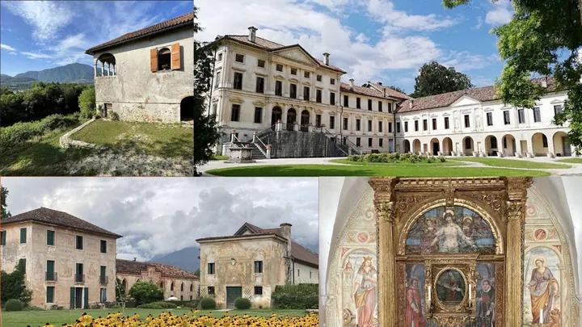

da sab 17 ott a dom 18 ott
Giornata delle Ville Venete
Durante il weekend del 17 e 18 ottobre 2026 , centinaia di Ville Venete si raccontano in modo unico, proponendo attività esperienziali inimitabili.
 Indicazioni
Indicazioni
- Costi e prenotazioni
- Costo non indicato · Prenotazione non indicata
- Programma
- Programma da verificare. Apri la fonte ufficiale per orari e possibili aggiornamenti.
- In caso di maltempo
- Nessuna indicazione specifica pubblicata.
- Note
- Acquisito automaticamente dalla fonte.
L’EVENTO
Descrizione completa
Durante il weekend del 17 e 18 ottobre 2026 , centinaia di Ville Venete si raccontano in modo unico, proponendo attività esperienziali inimitabili.
Il visitatore, l’ospite, potrà scoprire e conoscere le Ville Venete attraverso la partecipazione attiva ad esperienze tematiche, che potrà scegliere a seconda delle proprie passioni o del territorio che vorrà scoprire.
Tutto questo nell’arco di un intero weekend. Le Ville Venete racconteranno la propria storia, l’arte, la cultura, l’architettura, l’artigianalità e la natura che le circonda attraverso visite guidate, passeggiate, concerti, laboratori, degustazioni, soggiorni e molte altre esperienze che faranno conoscere al partecipante la Villa Veneta di ieri, oggi e domani.
In provincia di Belluno si potranno visitare:
Villa di Modolo (17-18 ott): Parco Romantico, i 60 anni della grande sequoia sopravvissuta a alluvione e Vaia (con aneddoti del proprietario) e degustazione di olio nuovo e Chianti.
Villa de' Mezzan (17-18 ott): Dimora estiva dei conti a Grum (Dolomiti Bellunesi) con saloni storici, giardino, villaggio agricolo e la chiesa trecentesca di Santo Stefano.
Villa Buzzati (18 ott): 120 anni dalla nascita dello scrittore, con accoglienza in giardino, reading immersivo dei suoi racconti con attori professionisti e brindisi.
Villa Villalta (18 ott): Mostra d'arte contemporanea con Sara Casal. Itinerario d'autunno tra loggia del '500 e annessi storici. Antichi mestieri, giochi, artigianato (lana, ferro, cesti) e Zafferano Dolomiti.
IL PROGRAMMA
Programma e orari
Appuntamenti raccolti dalle fonti elencate. Dove manca un orario, non è ancora disponibile in questa scheda.
Programma pubblicato
- 2026-10-17 — 2026-10-18 · 09:00:00
INFORMAZIONI UTILI
Prima di partire
- Controllare la fonte prima di partire.
ORGANIZZAZIONE